The Polishing program allows to insert the polishing with different working types. It is possible, moreover, to choose the geometry acquisition method of the slab: through the detection of the points that determine the vertices of the surface (from three up to a maximum of six) or using a regular surface (rectangle) through the entry of the zero quota and the value of the two sides.
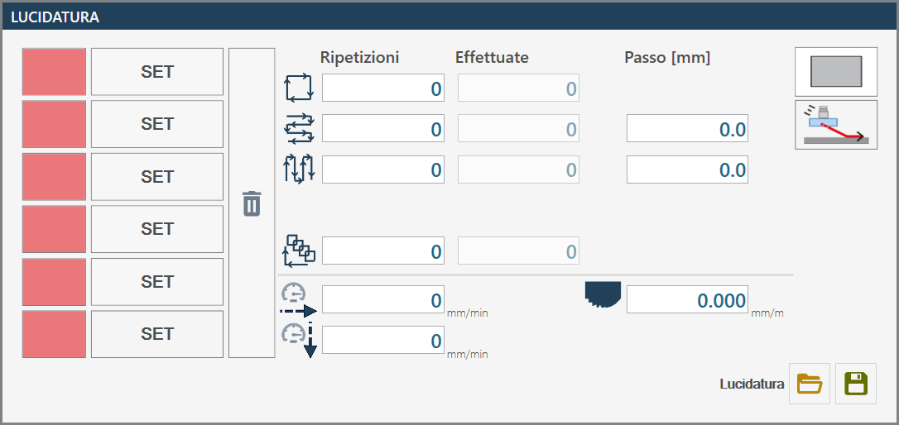
Processing mode
To use this working, it is necessary to choose one of the two available modes, selecting the corresponding button:
NOTEThe modes 'Rectangle Selection' and 'Free point selection' are mutually exclusive: the activation of one automatically excludes the other.
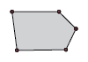 | Switch to free point selection mode |
Switch to rectangular selection mode |
Way in/Way out
The buttons in figure allow to change the entrance and the exit of the tool between progressive and standard mode.
NOTEThe modes 'Progressiva' and 'Standard' are mutually exclusive: enabling one automatically excludes the other.
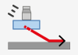 | Pass to progressive mode |
|---|---|
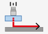 | Switch to standard mode |
Free points selection mode
This mode is displayed as follows:
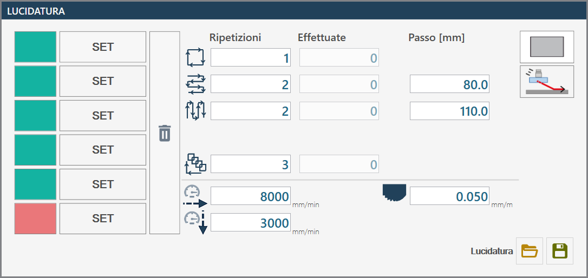
Parameters
Points location
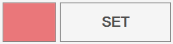 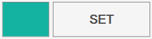 | Set (Imposta) |
Clean |
Working types
Perimeter | |
Horizontal passes | |
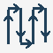 | Vertical Steps |
Global Repetition |
Machining parameters
Steps | Each working type can be repeated a number of times set in this dedicated field. |
Made | The number of steps performed is displayed. |
Step [mm] | Indicates the distance between one pass and the next, selectable for each working type. |
Parameters tool for polishing
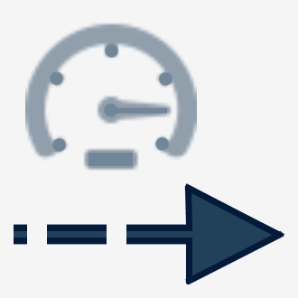 | Work speed |
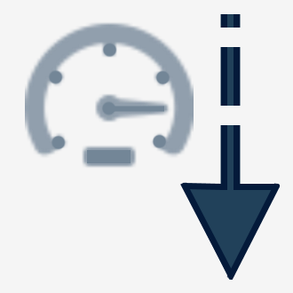 | Drop speed |
Tool wear |
Execution mode Free point selection
WARNING!Between a working and the next one the machine executes the movements without rising to the safety height.
The operator sets the position of a minimum of three up to a maximum of six available points, moving the machine manually and using the relative saving commands. Completed the definition of the points, you proceed with the configuration of the machining parameters for each desired polishing type. Contemporarily, also the specific parameters of the tool to be used for polishing are set.
At any time before the start of the polishing cycle, the operator has the possibility to change the tool entry and exit mode by selecting one of the two available options.
Once configuration is complete, it is necessary to tilt the A axis of the machine to 90_ and start the rotation of the disk. The operator can then proceed with the execution of the programmed cycles by pressing the 'Start cycle' button. During execution, the progress status can be monitored through the 'Completed' column, which reports the completed cycles for each selected polishing type.
Rectangular selection mode
This mode is shown as follows:
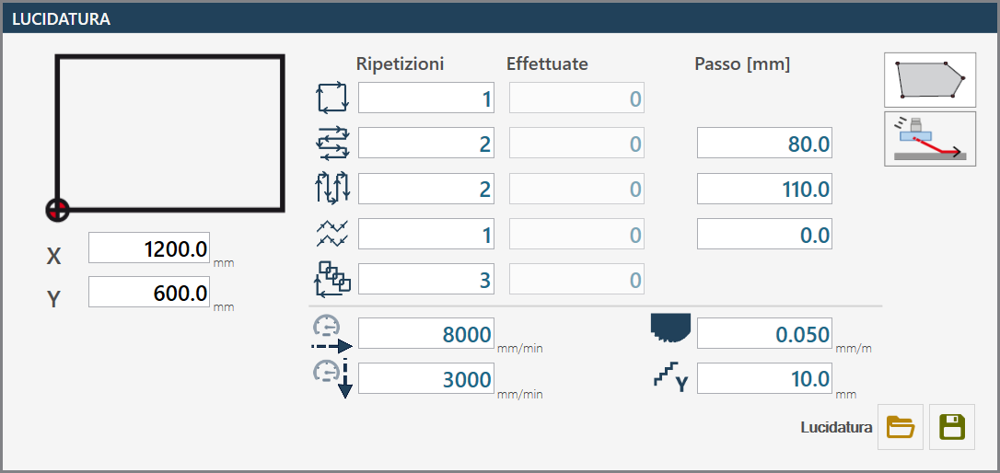
Parameters
Rectangle position
Sides of rectangle |
Machining parameters
It is postponed to processing parameters Free point selection for the workings: Contour, Horizontal/vertical passes and Global repetition.
A zig zag |
Parameters of the tool for polishing
It is referred to Disk Parameters Free point selection for the disk parameters: Working speed, Descent speed and Disk wear.
Y axis step for ZigZag |
Execution mode Selection rectangular
WARNING!Between a working and the next one the machine executes the movements without rising to the safety height.
The operator defines the position of the rectangle intended for polishing, moving the machine manually and modifying the values of the corresponding coordinates. Once the rectangle definition is complete, proceed with the configuration of the machining parameters for each type of desired polishing. At the same time, the specific parameters of the tool used for polishing are also set.
At any time before the start of the polishing cycle, the operator has the possibility to change the tool entry and exit mode by selecting one of the two available options.
After configuration is complete, it is necessary to tilt the A axis of the machine to 90_ and start the rotation of the disk. The operator can then proceed to execute the programmed cycles by pressing the 'Start cycle' button. During execution, the progress status can be monitored through the 'Completed' column, which reports the completed cycles for each type of polishing selected.